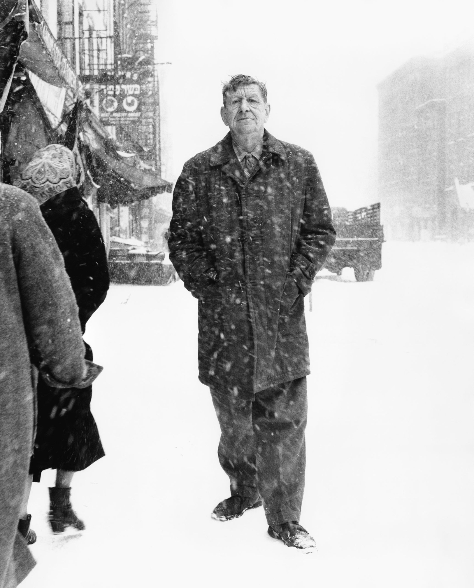

- Editor's Page
The Green Book - a personal experience
- Current events
- Features
- Fiction
- Children's Corner
- Antroposophy
- Poetry
- Words And Music
- Letters
- E-books
- Search
- Old Issues
- Contact
- ↑
SouthernCrossReview
SouthernCross
ReviewReview of fiction, education, science, current events,
essays, book reviews, poetry and AnthroposophyNumber 123, March - April 2019
"Self-portrait"
Frida Kahlo de Rivera 6 July 1907 – 13 July 1954) was a Mexican artist who painted many portraits, self-portraits and works inspired by the nature and artifacts of Mexico. Inspired by the country's popular culture, she employed a naïve folk art style to explore questions of identity, postcolonialism, gender, class and race in Mexican society. Her paintings often had strong autobiographical elements and mixed realism with fantasy. In addition to belonging to the post-revolutionary Mexicayotl movement, which sought to define a Mexican identity, Kahlo has been described as a surrealist or magical realist... Continue
 Browse in the SCR E-book Library
Browse in the SCR E-book LibraryTolstoy, an artillery officer who fought at Sevastopol, who knew his stuff, who was a hell of a man anywhere you put him—bed, bar, in an empty room where he had to think. I started out very quiet and I beat Mr. Turgenev. Then I trained hard and I beat Mr. de Maupassant. I’ve fought two draws with Mr. Stendhal, and I think I had an edge in the last one. But nobody’s going to get me in any ring with Mr. Tolstoy unless I’m crazy or I keep getting better.
Ernest Hemingway
Editor's Page
The Green Book - A personal experience

I watched the Academy Awards presentations last night (February 24, 2019) until 1 o'clock in the morning because Argentina is two hours later than Eastern Standard Time in the U.S. I was falling asleep partly from boredom and partly because of the late hour, when the film “Green Book” was announced as the surprise winner of the Oscar for best picture. I had seen the title before but thought it had something to do with ecology. Now, as I watched the TV screen, it morphed into a book I had known well many years ago: The Negro Traveler's Green Book. I was born and grew up in Brooklyn long before Spike Lee and Barbara Streisand. Brooklyn was segregated, not because the law said it must be – but because it just was. I lived in Flatbush, which had some Black people (then called Negroes or Colored). Brooklyn's real Negro neighborhood was called Bedford Stuyvesant. It wasn't particularly poor, rather black middle class, populated at first by families who had moved there from an overcrowded Harlem... Continue reading
Current Events
Ground Zero Nagasaki - Living the Nuclear Past, and Future
by Susan Southard
Landing at Nagasaki Airport last November, I joined a line of Japanese men, women, and children waiting to disembark from our plane. Most were likely returning home on this holiday weekend or arriving to visit family and friends. I wondered how many of them remembered or thought about the nuclear annihilation of this city 73 years ago -- within, that is, their own lifetimes or those of their parents or grandparents.
From the airport, I took a bus along the jagged coast through small mountain villages toward Nagasaki, entering the city from the north on a route used by rescue and relief workers on August 9, 1945, and by bewildered family members racing into the smoldering city to search for their loved ones. For months after the bombing, no public transportation could penetrate the ruins of this northern part of the city. My bus, on the other hand, moved seamlessly into a metropolis that showed no sign of its obliteration three-quarters of a century ago... Continue reading
Hail Caesar!- Veni, Vidi, Tweeti (I Came, I Saw, I Tweeted
An Obituary for the Republic by Tom Engelhardt
What dreamers they were! They imagined a kind of global power that would leave even Rome at its Augustan height in the shade. They imagined a world made for one, a planet that could be swallowed by a single great power. No, not just great, but beyond anything ever seen before -- one that would build (as its National Security Strategy put it in 2002) a military “beyond challenge.” Let’s be clear on that: no future power, or even bloc of powers, would ever be allowed to challenge it again. And, in retrospect, can you completely blame them? I mean, it seemed so obvious then that we -- the United States of America -- were the best and the last. We had, after all, outclassed and outlasted every imperial power since the beginning of time. Even that other menacing superpower of the Cold War era, the Soviet Union, the "Evil Empire” that refused to stand down for almost half a century, had gone up in a puff of smoke... Continue reading
Planet in Crisis - The Heat’s On Us
by Dahr Jamail
I’m standing atop Rush Hill on Alaska's remote St. Paul Island. While only 665 feet high, it provides a 360-degree view of this tundra-covered, 13-mile-long, seven-mile-wide part of the Pribilof Islands. While the hood of my rain jacket flaps in the cold wind, I gaze in wonder at the silvery waters of the Bering Sea. The ever-present wind whips the surface into a chaos of whitecaps, scudding mist, and foam. The ancient cinder cone I’m perched on reminds me that St. Paul, was, oh so long ago, one of the last places woolly mammoths could be found in North America. I’m here doing research for my book The End of Ice. And that, in turn, brings me back to the new reality in these far northern waters: as cold as they still are, human-caused climate disruption is warming them enough to threaten a possible collapse of the food web that sustains this island’s Unangan, its Aleut inhabitants, also known as “the people of the seal.” Given how deeply their culture is tied to a subsistence lifestyle coupled with the new reality that the numbers of fur seals, seabirds, and other marine life they hunt or fish are dwindling, how could this crisis not be affecting them? Continue reading
Features
The Cosmological Principle of Ancient India by Konrad Rudnicki
With time, we are increasingly aware of the existence of ever older cultures. As recently as the 18th century, it was believed that human culture was something very recent - that the first roots of it are to be found only in the social and scholarly institutions of ancient Greece and Rome. The Europeans of that time thought that prior to ancient Greece there were only uncivilized customs and barbaric art and therefore ideas about nature, and particularly about the Universe, must have been quite primitive, too. Furthermore, it was commonly thought that though, to be sure, the Greeks had laid the foundations for modern science, true scientific research had actually begun only in the Renaissance era.Something was known about the ancient Egyptian knowledge of nature, but in fact genuine interest into the culture and civilization of Egypt began in Europe only with Napoleon's Egyptian campaign. The Europeans discovered the surprising fact that Egyptian culture, though a few thousands years older than the culture of the ancient Greeks, had apparently been much more advanced scientifically. The first Egyptologists were enchanted by the mathematical proportions of the astronomically oriented pyramids. In the 19th century, ancient Egypt and its culture became fashionable in Europe ... Continue reading
Los nazis perdieron la batalla conmigo
Entrevista con Raquelc Rutman por Roberto Lapid
Raquel Rutman nació en 1928 en la ciudad de Lodz, Polonia. Su número de prisionera durante la Segunda Guerra Mundial era el 58.032. Hoy reside en Buenos Aires, pero pasó la mayor parte de su vida en Córdoba. Me recibe con la mesa de su casa repleta de comida. “Que nunca jamás falte, otra vez”, dice. Sus labios muestran una sonrisa casi permanente, pero es inevitable que se interrumpa en algunos tramos de su narración. “Yo era pequeña cuando vi a las tropas nazis entrar en mi ciudad. Vivía con mi madre y mi hermano Leo. Vi también a varios de mis vecinos agitar las banderas con la cruz esvástica festejando la llegada de los alemanes”, cuenta. Raquel vivió muchas situaciones diferentes ese día, aunque no imaginaba lo que tendría que atravesar en un futuro cercano. El encierro en el gueto, el hambre, la miseria, las enfermedades, los suicidios, las rebeliones contenidas por los nazis a sangre y fuego, los fusilamientos, las humillaciones, los ahorcamientos, las pilas de cadáveres. También la selección de personas para marchar a los campos de muerte... Continuar
Fiction
Words Unspoken
by Gaither StewartSince his return home from the war Helmut had never felt emotions of normal human warmth. The atmosphere in the maddened postwar years was chaotic. Life back in the homeland was different than he had expected. He knew that he too was different. The peace of which the politicians spoke didn’t regard returning soldiers like him. He was just a war-shattered, sex-hungry returnee from the East where among the young men inhabiting the cellars of the German-occupied part of Stalingrad cold and rats had reigned. At the same time, the shortage of men in the homeland had created a likewise painful situation for German women. The women were alone and lonely. Each harbored love to share. And no men to whom to give it. The men were all away on the front somewhere. And few were the men who returned home whole. Human relations were convoluted... Continue reading
The Shoemaker and the Devil
by Anton ChekhovIt was Christmas Eve. Marya had long been snoring on the stove; all the paraffin in the little lamp had burnt out, but Fyodor Nilov still sat at work. He would long ago have flung aside his work and gone out into the street, but a customer from Kolokolny Lane, who had a fortnight before ordered some boots, had been in the previous day, had abused him roundly, and had ordered him to finish the boots at once before the morning service.
“It’s a convict’s life!” Fyodor grumbled as he worked. “Some people have been asleep long ago, others are enjoying themselves, while you sit here like some Cain and sew for the devil knows whom....” To save himself from accidentally falling asleep, he kept taking a bottle from under the table and drinking out of it, and after every pull at it he twisted his head and said aloud: “What is the reason, kindly tell me, that customers enjoy themselves while I am forced to sit and work for them? Because they have money and I am a beggar?”
Continue reading
Children's Corner
Los árboles parlantes - (bilingual)
por Frank Thomas SmithNicolás vive en un pueblito del norte del país. La casa en la que habita está en las afueras del pueblo cerca de un bosque. Cuando Nicolás mira por la ventana, ve el bosque, que ha estado allí desde que tiene memoria. A decir verdad, es una de las primeras cosas que vio en su vida, después de su madre, por supuesto. Cuando era bebé, ella lo levantaba en brazos para que pudiera mirar el bosque por la ventana. Cuando Nicolás tuvo edad de caminar, se internaba con su madre en el bosque por un sendero, pero sólo hasta el Árbol parlante. Naturalmente, el árbol no le hablaba a él en esa época, puesto que no lo habría entendido. Era el árbol más alto y corpulento de la zona y la madre le dijo a Nicolás que se trataba de un algarrobo... Continuar
Anthroposophy
The Fifth Gospel - Lecture 6 of 7 lectures
by Rudolf SteinerThis evening and tomorrow I feel obliged to speak to you of what we have become accustomed to call the Mystery of Golgotha, but I will attempt to speak of it in a somewhat different way than until now. What has been said previously, although certainly esoteric, has had a more esoteric-theoretical content. I have spoken about the essence and significance of the Mystery of Golgotha for humanity. That it is to a certain extent the central phenomenon for the whole evolution of humanity on earth and to what extent it is the central phenomenon has been considered. This has been taken wholly from sources of occult investigation. The thought-sources have been broached which stream out from the Mystery of Golgotha and which develop and are living in our earthly evolution. If human evolution on earth is observed from a clairvoyant vantage point, the significance of the Mystery of Golgotha can be grasped.
Continue reading
Understanding the Mystery of Golgotha
by Rudolf SteinerThe Mystery of Golgotha for which I have already prepared the ground in recent lectures will be the subject of our inquiry today. Let us recall the main points for consideration. I mentioned on the last occasion that in order to arrive at a true understanding of the world we must study the tripartite division of the cosmos and man in the light of the three principles of body, soul and spirit. It is most important to be aware of this fact at the present time, especially in the field of Anthroposophy. I should like to remind you that this idea of trichotomy forms the central theme of my book Theosophy.No doubt you have all read this book and will know that this idea forms the nucleus of the whole book. I quote the relevant passage: The spirit is eternal; the body is subject to life and death in accordance with the laws of the physical world; the soul-life which is subject to destiny mediates between these two (body and spirit) during life on Earth... Continue reading
Poetry
The Ballad of Barnaby

by W. H. AudenListen, good people, and you shall hear
A story of old that will gladden your ear, The Tale of Barnaby, who was, they say,
The finest tumbler of his day.
In every town great crowds he drew,
And all men marvelled to see him do
The French Vault, the Vault of Champagne,
The Vault of Metz, and the Vault of Lorraine.
His eyes were blue, his figure was trim,
He liked the girls and the girls liked him;
For years he lived a life of vice,
Drinking in taverns and throwing the dice...
Continue
La amiga de un país distante / The Friend from a Distant Land (bilingual)
by Frank Thomas Smith
Más allá de lo más alto, del pico del Aconcagua,
Vive una dama de delicada salud,
Conocida por el nombre de Mireya.
Su mirada, su sonrisa, son las que busco,
Son para mí más que mundos de riqueza:
La dama enferma Mireya.
Su paso es más lento ahora, abraza débil,
Así que oraré por ella a escondidas,
Por la vida de mi querida Mireya.,,
Continuar
The Cracked-up Kid
by Frank Thomas Smith
Dark reflection of man,
stands beneath the traffic light,
which pulses to amber,
then red.
The first wave of cars darts past,
then the smoking buses that never stop
for red.
We of the second wave brake and halt,
reluctantly, headlights averted,
eyes ahead, hooded, perverted...
Continue
Words and Music
Gracias a la vida
by Mercedes Sosa - sung by Mercedes Sosa and Joan BaezGracias a la vida, que me ha dado tanto
Me dio dos luceros, que cuando los abro
Perfecto distingo, lo negro del blanco
Y en el alto cielo su fondo estrellado
Y en las multitudes el hombre que yo amo.
Gracias a la vida, que me ha dado tanto
Me ha dado el sonido del abecedario
Con él las palabras que pienso y declaro
Madre amigo hermano
Y luz alumbrando, la ruta del alma del que estoy amando... Escuchar / Listen

Letters to the Editor
You can find us under the Southern Cross in the Traslasierra Valley, Province of Córdoba, Argentina. Visitors always welcome. Just follow the sign that reads: La Cruz del Sur.
Frank Thomas Smith, Editor
Contact
Author Guidelines
Older Issuessso we can advise you when the next issue is ready.
You can search for authors or titles, entering names or keywords in the Google search box below.